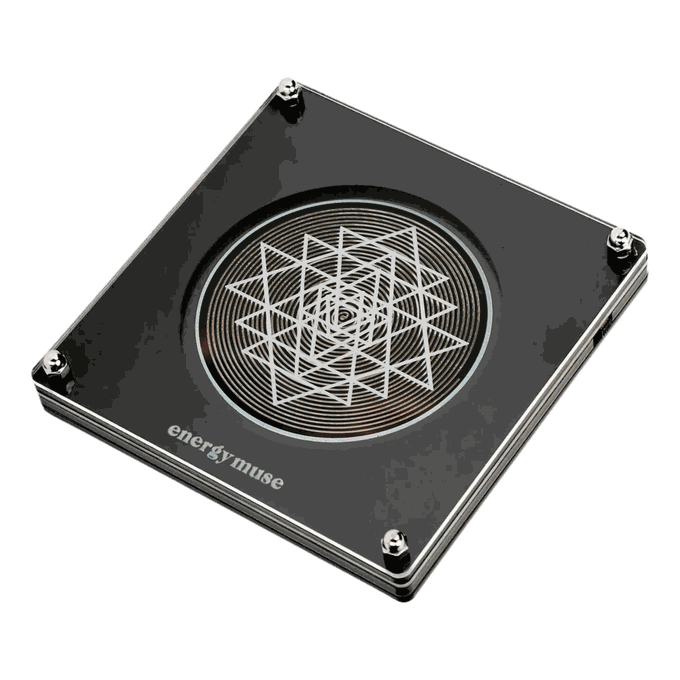

The frequency room
Choose your frequency.

Crystals that answer to 528 Hz
See the whole collection →Frequency generators are not medical devices and are not a substitute for healthcare. Experiences vary.

Frequency generators are not medical devices and are not a substitute for healthcare. Experiences vary.